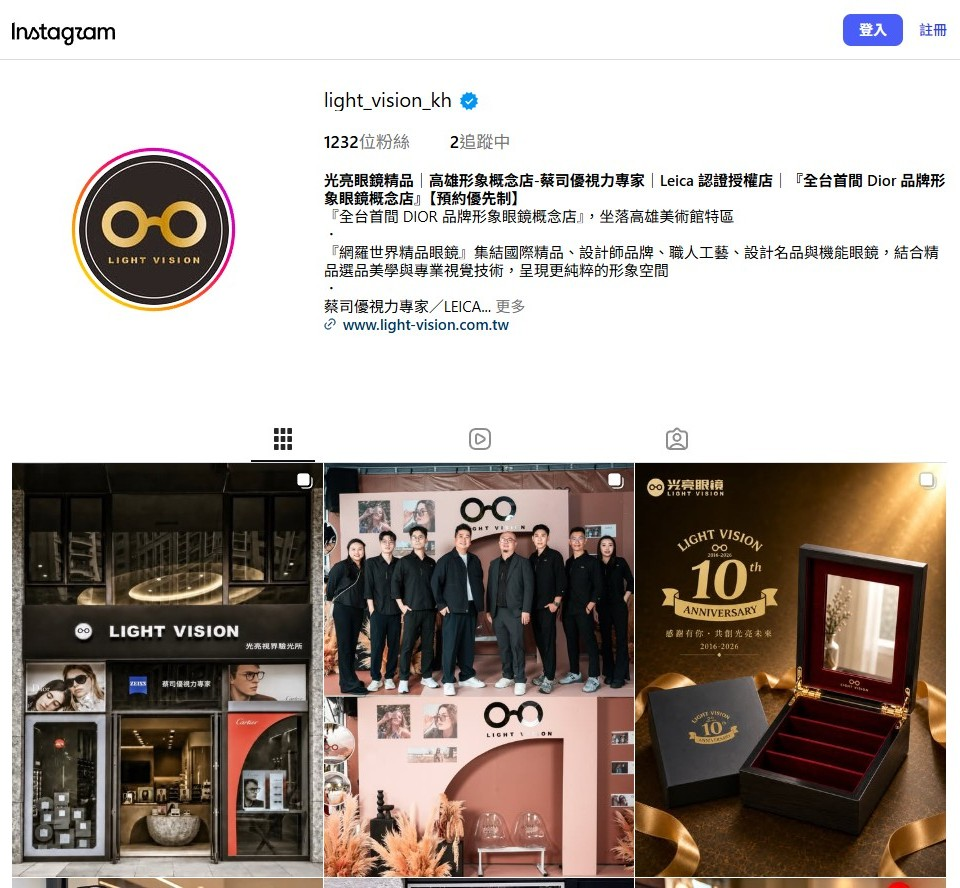

聯合提案企劃｜2026 年 11 月
光亮眼鏡精品
FB、IG、Threads 廣告提案
眼鏡是配件，戴在人臉上才看得出樣子。這份提案用品牌帳號加人物帳號兩條線，帶來粉絲、門市客人與官網訪客。
提案方 Orderdan 簡單營銷｜orderdan-ai-marketing.com｜提案日期 2026-11-05
01 提案摘要
三個目標：增加粉絲、到門市、到官網逛逛
| 項目 | 內容 |
|---|---|
| 目標 | 增加粉絲、到門市、到官網逛逛 |
| 客人的路徑 | 看到貼文後留言、發 FB／IG 訊息詢問、加 LINE，再預約到店 |
| 通路 | FB、IG、Threads 廣告 |
| 帳號 | 品牌帳號，加上人物 IP 帳號協作 |
| 成效怎麼算 | 新增粉絲數、留言與訊息數、LINE 加入數、官網訪客數、到店數 |
資料來源：光亮眼鏡 Instagram 公開頁面，2026-11-05 讀取。
02 現況
與個人帳號共同發布的開幕貼文468 讚，品牌帳號近期貼文 2 讚與 7 讚

- Instagram @light_vision_kh：1,232 位粉絲，已驗證帳號。
- 全台首間 DIOR 品牌形象眼鏡概念店，設有 DIOR 原廠授權展示櫃體。
- 超過 60 個原廠授權國際精品與工藝眼鏡品牌。
- 蔡司優視力專家，貼文寫斥資逾 4,000 萬元配置 ZEISS 全套前導波設備；LEICA 認證授權據點。
- 從屏東出發、深耕南台灣十年；高雄形象概念店在美術館特區（鼓山區美術東二路 620 號），預約優先制。
| 日期 | 貼文主題 | 發布帳號 | 按讚 |
|---|---|---|---|
| 2026-07-24 | 高雄形象概念店介紹 | 品牌帳號 | 108 |
| 2026-08-08 | 高雄形象概念店開幕 | 與 @______fuboss 等個人帳號共同發布 | 468 |
| 2026-10-05 | Cartier Precious 珍貴頂級系列 | 品牌帳號 | 2 |
| 2026-10-24 | DIOR 眼鏡櫥窗 2026 秋冬 | 品牌帳號 | 7 |
Instagram 公開頁面顯示數字，2026-11-05 讀取。開幕貼文另有 11 則留言。
03 判讀
有人物的貼文，互動是品牌貼文的四倍以上
- 人物帳號帶來的互動比品牌帳號多。與個人帳號共同發布的開幕貼文 468 讚；品牌帳號的概念店介紹貼文 108 讚，近期兩則 2 讚與 7 讚。
- 眼鏡是配件，戴在人臉上才看得出樣子。近期貼文的主角是鏡款與櫥窗。有人物配戴，觀眾能想像自己戴起來的樣子。
- 留言、訊息、LINE 是到店前的一步。門市採預約優先制，客人問了再來。這三個動作都數得到，也都對得回廣告。
04 人物 IP
品牌帳號之外，加一個人物 IP 帳號協作導流
- 分工：品牌帳號發空間、選品、品牌故事；人物帳號發配戴、穿搭、挑鏡日常。
- 協作：兩個帳號用 IG 協作貼文共同發布同一則內容，粉絲互相導流。開幕貼文就是這個做法。
- 廣告：人物帳號的貼文一併投放，兩個帳號分開看成效。
- 人選：店主、門市同仁，或合作的在地人物。請業主確認是否有人選與現成的個人帳號。
05 廣告架構
三組廣告，對應三個目標
| 目標 | 給誰看 | 素材 | 客人的動作 |
|---|---|---|---|
| 增加粉絲 | 高雄與屏東、對精品與穿搭有興趣的人 | 人物配戴短影音、協作貼文 | 追蹤品牌帳號與人物帳號 |
| 到門市 | 看過影片、互動過的人，門市周邊的人 | 空間影片、DIOR 店中店、預約邀請 | 留言、發 FB／IG 訊息、加 LINE |
| 到官網逛逛 | 互動過的人、追蹤者 | 品牌選品輪播（DIOR、Cartier 等） | 點進官網看鏡款 |
- 版位：Facebook、Instagram（動態、限時動態、Reels）、Threads。三個平台用同一組素材，在版位設定一起開。
- Threads 版位支援的素材格式，以廣告管理員後台顯示為準，上線前確認。
- 投放半徑與受眾條件：開戶後與業主確認。
06 素材
現有照片可以上廣告，補拍的主角是人
- 現有：店面外觀、DIOR 櫥窗、Cartier 鏡款、十週年主視覺，照片可以做成廣告。
- 建議補拍：人物配戴鏡框的直式短片、試戴前後對照、挑鏡過程。
- 文案原則：寫鏡框的材質、工藝、品牌故事；驗光與視力的內容只描述設備與流程。
07 追蹤與報表
留言、訊息、LINE、官網、到店，五個數字對起來
- 留言數與訊息數：由廣告後台與收件匣統計。
- LINE：記錄每支廣告帶來的加入連結點擊。
- 官網 www.light-vision.com.tw 安裝 Meta Pixel 與轉換 API，記錄官網訪客。
- 到店：預約名單回填「已到店」「已成交」。
- 上線前與業主確認：DIOR、Cartier 等品牌對授權店廣告使用品牌名稱與原廠圖片的規範。
- 追蹤碼用 Google Tag Manager 管理。
- 報表：每週一份數字摘要，每月一份檢討。
08 時程
30 天：第一週建置，第二週上線，月底檢討
- 第 1 週廣告帳戶與權限開通、Meta Pixel 與轉換 API 安裝、人物 IP 人選確認、素材盤點
- 第 2 週三組廣告上線
- 第 3–4 週拍攝人物短片，依數據調整素材與受眾
- 第 30 天成效報告與下一階段建議
09 成效指標
上線兩週取得基準，再訂目標數字
- 新增粉絲數
- 留言數與訊息數
- LINE 加入數
- 官網訪客數
- 到店回填數
目標數字在上線兩週、取得實際成本後訂定。
10 費用
費用
| 項目 | 計費方式 |
|---|---|
| 每月廣告預算（付給平台） | 沒有金額限制 |
| 廣告代操服務費 | 廣告費的 20% |
| 追蹤建置（網站埋代碼） | 一次性，按工時計費 |
- 直接使用業主自己的廣告帳戶投放，廣告費由該帳戶付給平台。
- 廣告預算金額高時，協助財務報帳。
- Meta 廣告：企業另外替 Meta 支付 3%，該期廣告費可以列入公司費用扣抵。
11 開始前的準備
開始前，請業主準備的資料
- 人物 IP 人選與其 IG 帳號
- Meta 企業管理平台的廣告帳戶與粉專、IG 權限
- LINE 官方帳號
- 官網後台或工程窗口（安裝追蹤碼）
- 各精品品牌的廣告素材使用規範
- 可拍攝短片的時段